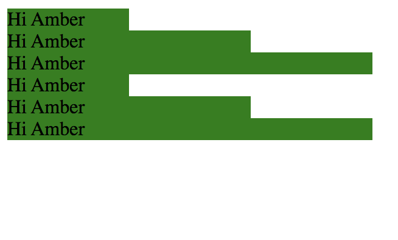

amber$ cd main/Golang/\[Golang\]\ get\ data\ out\ of\ struct
[Golang] get data out of struct
In the {{ range .}} {{ end }}, only data in the variable could be
gotten. So in this situation, there are two ways to get data out of the
struct in the template.
- use $ simple to go back to the root, eg {{ $.another.width }}
- make a variable to get that before range. eg {{ $root := . }}
Here is the demo:
Code:
Result:
